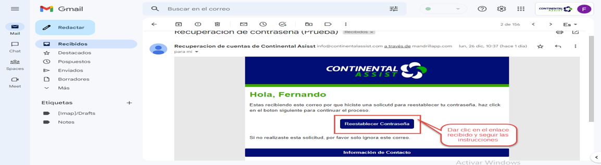
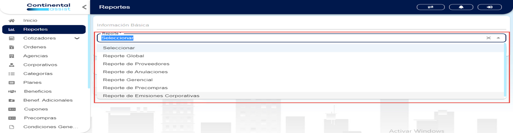
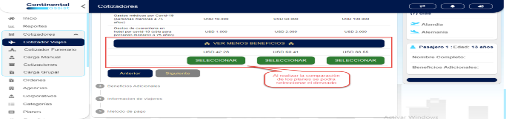

1. Manual
2. Módulos
- Módulos:
Iniciar Sesión
Recuperar contraseña
Inicio
Agencias
Categorias
Corporativos
Cotizadores
Ordenes
Reportes
3. Iniciar Sesión
Login
Imagen 3.1 Inicio de Sesión.
4. Recuperar Contraseña
Proceso
Imagen 4.1 recuperar contraseña.
Imagen 4.2 recuperar contraseña.
Imagen 4.3 recuperar contraseña.
Imagen 4.4 recuperar contraseña.
Ejemplos
5. Inicio
Secciones
Imagen 5.1 inicio.
Imagen 5.2 inicio.
Imagen 5.3 inicio.
Imagen 5.4 inicio.
6. Reportes
Uso
- Reportes:
Reporte Global
Reporte de Proveedores
Reporte de Anulaciones
Reporte Gerencial
Reporte de Precompras
Reporte de Emisiones Corporativas
Imagen 6.1 reportes.
Imagen 6.2 reportes.
Imagen 6.3 reportes.
Imagen 6.4 reportes.
Imagen 6.5 reportes.
7. Cotizadores
Tipos de Cotizadores
Cotizador de viajes
Imagen 7.1 cotizadores.
Imagen 7.2 cotizadores.
Imagen 7.3 cotizadores.
Imagen 7.4 cotizadores.
Imagen 7.5 cotizadores.
Imagen 7.6 cotizadores.
Imagen 7.7 cotizadores.
Imagen 7.8 cotizadores.
Imagen 7.9 cotizadores.
Imagen 7.10 cotizadores.
Imagen 7.11 cotizadores.
Imagen 7.12 cotizadores.
Imagen 7.14 cotizadores.
Cotizador funerario
Imagen 7.15 cotizadores.
Carga manual
Imagen 7.16 cotizadores.
Carga grupal
Imagen 7.17 cotizadores.
Cotizaciones
Imagen 7.18 cotizadores.